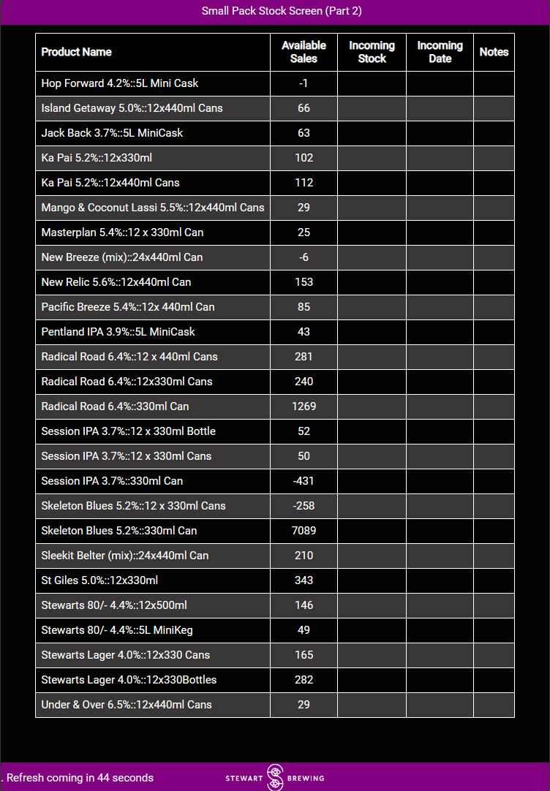
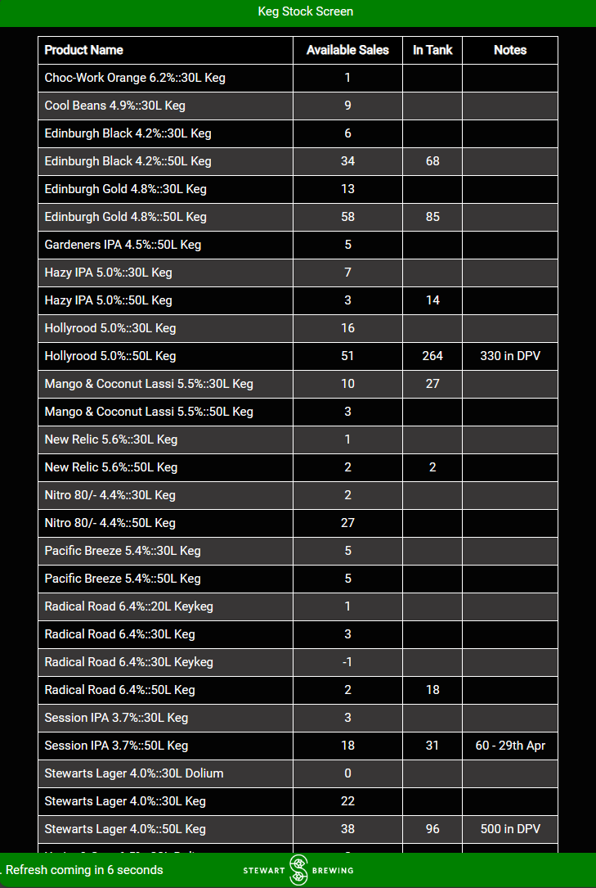
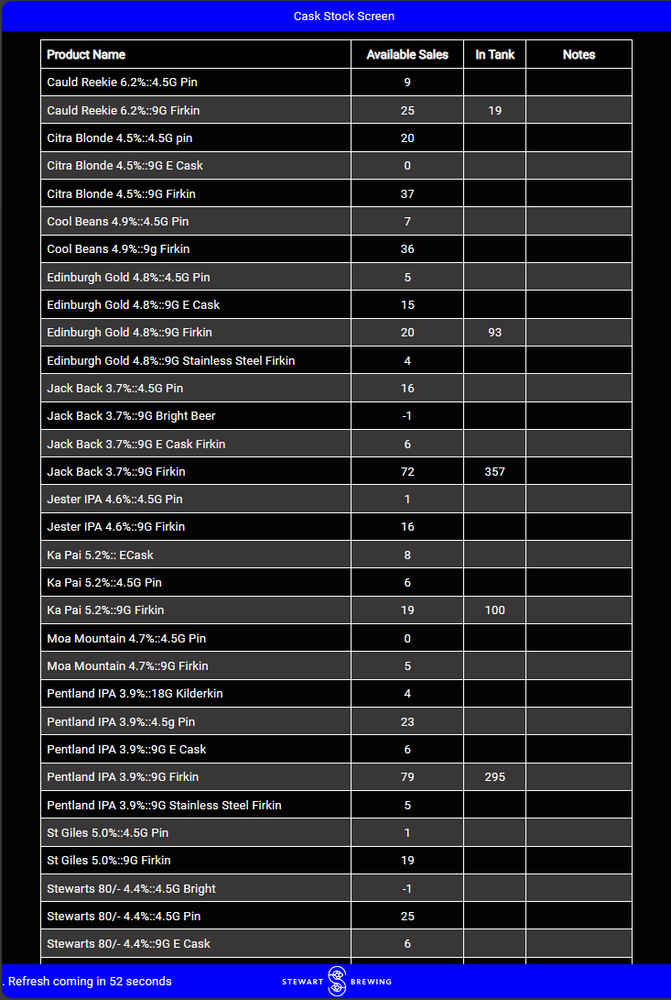
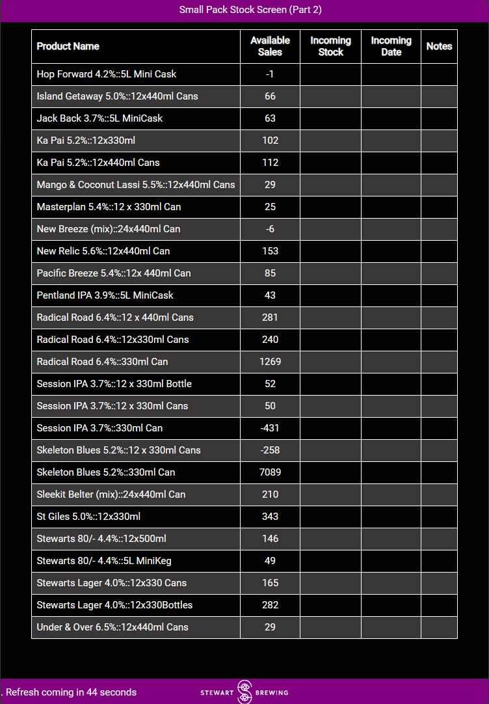
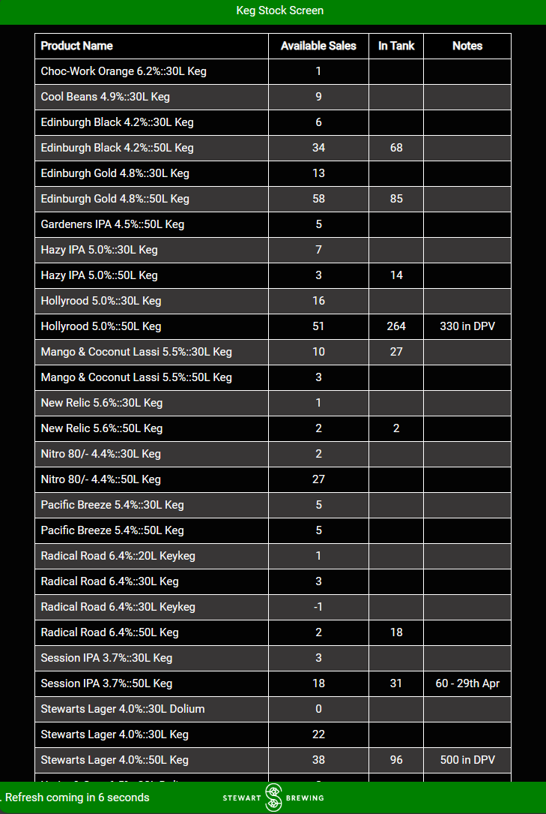
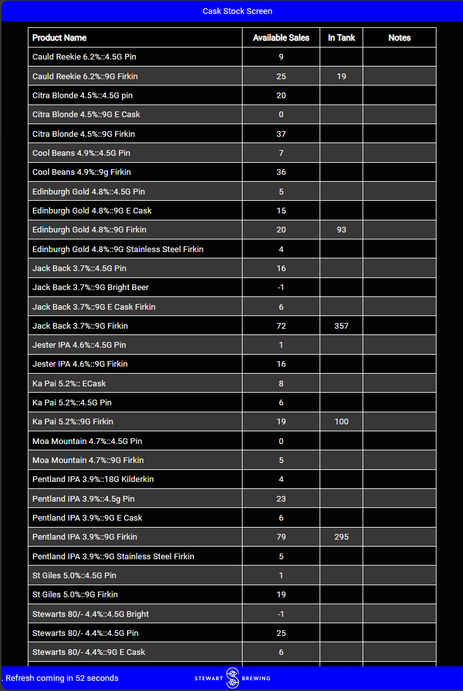
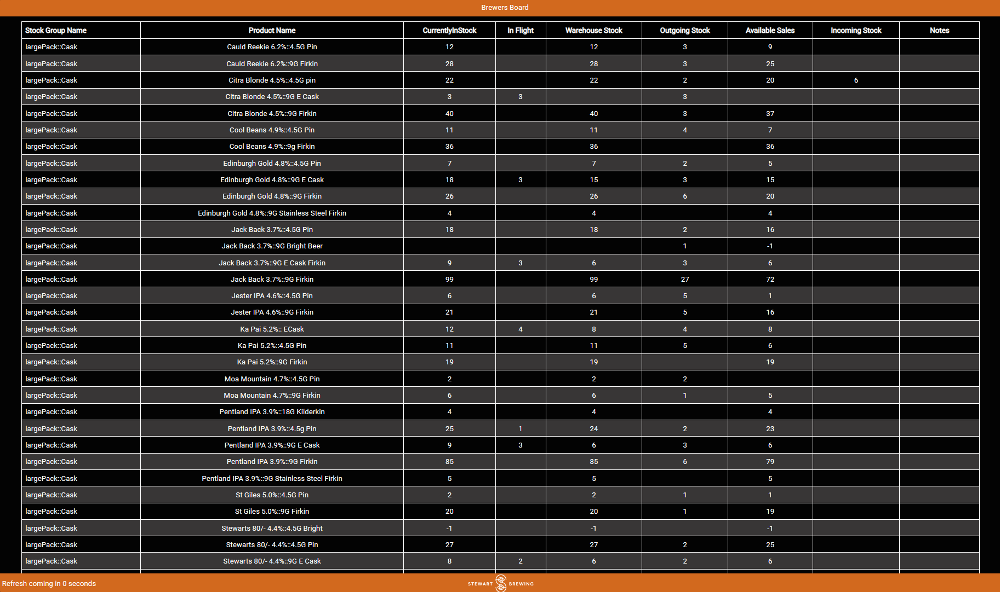

Live Inventory Screens
Brief:
Create live inventory screens that will link into the stock management system and replace the manually written whiteboard.
Code and Modules used: Python, HTML, CSS, FastAPI, SharePoint API, Brewman API
 






Added a Brewers Board, to give the Head Brewer information on where stock is currently located to help with stock takes